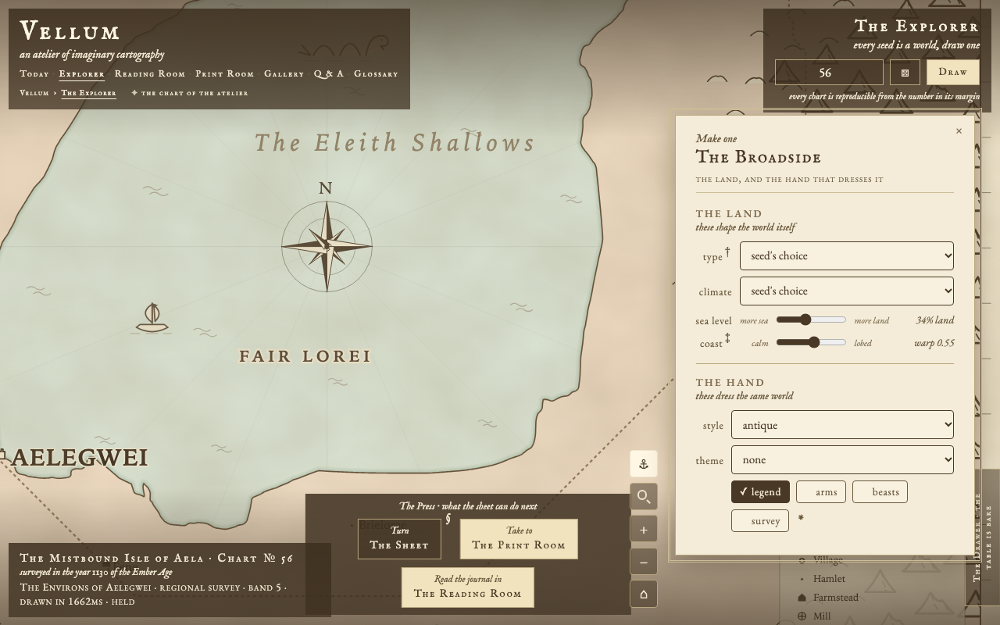
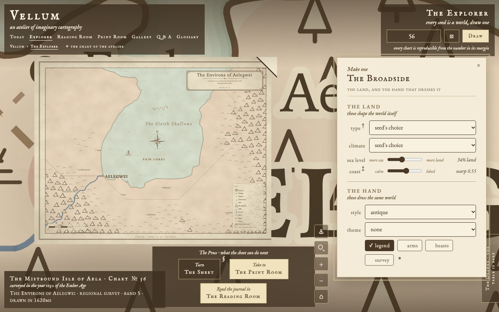
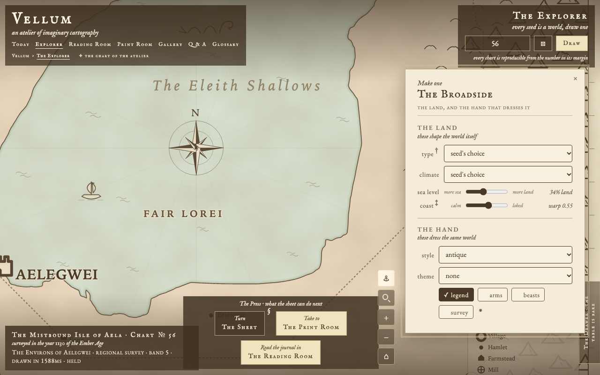

In the Explorer: the Environs of Aelegwei, chart № 56
The built Explorer at 1280 by 800 under reduced motion, taken to the deepest band, with the close-up it drew swapped for each direction's sheet. Each frame is half size here; the PNG it names is the frame one to one.
Today, the Explorer untouched (the control)
the deepest band, unheld (32 times): explorer-aelegwei-untouched.png, shown here at half sizeheld (96 times): explorer-aelegwei-untouched-held.png, shown here at half size
Today, drawn by this round's code and swapped in (proves the swap: the chart is pixel-identical to the control)
the deepest band, unheld (32 times): explorer-aelegwei-today.png, shown here at half size

held (96 times): explorer-aelegwei-today-held.png, shown here at half size
A. Order only

the deepest band, unheld (32 times): explorer-aelegwei-a.png, shown here at half sizeheld (96 times): explorer-aelegwei-a-held.png, shown here at half size
B. The great made greater
the deepest band, unheld (32 times): explorer-aelegwei-b.png, shown here at half sizeheld (96 times): explorer-aelegwei-b-held.png, shown here at half size
C. Three sizes, far apart
the deepest band, unheld (32 times): explorer-aelegwei-c.png, shown here at half sizeheld (96 times): explorer-aelegwei-c-held.png, shown here at half size
A. Order only, grown with depth
the deepest band, unheld (32 times): explorer-aelegwei-a-grow.png, shown here at half size

held (96 times): explorer-aelegwei-a-grow-held.png, shown here at half size
B. The great made greater, grown with depth
the deepest band, unheld (32 times): explorer-aelegwei-b-grow.png, shown here at half sizeheld (96 times): explorer-aelegwei-b-grow-held.png, shown here at half size